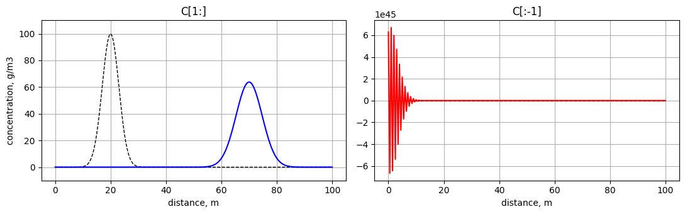

Tutoriel 6#
Se familiariser avec le décentrage « upwind »#
L’advection pose un problème que la diffusion ne posait pas : il faut décider dans quel sens aller chercher l’information, et ce choix dépend du signe de la vitesse. Se tromper ne donne pas un résultat « un peu moins bon » : cela fait exploser le modèle en quelques dizaines d’itérations.
1. Le terme d’advection fait perdre une cellule#
L’équation d’advection, \(\frac{\partial C}{\partial t} = - V_x \frac{\partial C}{\partial x}\), ne contient qu’une seule dérivée en espace :
dCdt_a = - Vx * ( C[1:] - C[:-1] ) / dx # taille nx-1
Le résultat est de taille nx-1, alors que C est de taille nx. (Rappel : la diffusion fait intervenir deux dérivées imbriquées, on y perd donc deux cellules et la mise à jour porte sur C[1:-1].)
Il faut donc choisir quelles cellules de C mettre à jour, et il n’y a que deux possibilités :
C[1:] += dt * dCdt_a # on decale vers la droite
C[:-1] += dt * dCdt_a # on decale vers la gauche
Les deux écritures sont numériquement valides — Python ne signalera aucune erreur. C’est ce qui rend le piège si vicieux : c’est la physique qui doit trancher, pas Python.
2. Le bon choix dépend du sens du courant#
L’idée du décentrage « upwind » (littéralement face au vent) est d’aller chercher l’information en amont, là d’où le courant arrive :
mise à jour |
||
|---|---|---|
\(V_x > 0\), le courant va vers la droite |
|
indices |
\(V_x < 0\), le courant va vers la gauche |
|
indices |
Un polluant a été déversé dans une rivière et forme un pic de concentration ; le courant l’emporte vers l’aval à Vx = 0.5 m/s. Le bon choix est donc C[1:]. Faisons tourner les deux versions.
import numpy as np
import matplotlib.pyplot as plt
Lx, Vx, nx = 100.0, 0.5, 201 # riviere (m), courant (m/s), nombre de points
x = np.linspace(0, Lx, nx)
dx = Lx/(nx-1)
dt = dx/(2.1*abs(Vx)) # contrainte de stabilite de l'advection
nt = int(100.0/dt) # 100 secondes simulees
C_ini = 100*np.exp(-(x-20)**2/18) # un pic de polluant centre a x = 20 m
fig, (ax1, ax2) = plt.subplots(1, 2, figsize=(11,3.5))
for choix, ax in [('C[1:]', ax1), ('C[:-1]', ax2)]:
C = np.copy(C_ini)
for it in range(nt):
dCdt_a = - Vx*( C[1:] - C[:-1] )/dx
if choix == 'C[1:]': C[1:] += dt*dCdt_a # upwind correct pour Vx > 0
else: C[:-1] += dt*dCdt_a # decalage a contresens
ax.plot(x, C_ini, 'k--', linewidth=1)
ax.plot(x, C, 'b' if choix == 'C[1:]' else 'r')
ax.set_title(choix) ; ax.set_xlabel('distance, m') ; ax.grid(True)
ax1.set_ylabel('concentration, g/m3') ; ax1.set_ylim([-10, 110])
plt.tight_layout() ; plt.show()

À gauche, le pic s’est déplacé de \(V_x \times t = 0.5 \times 100 = 50\) m vers l’aval : c’est exactement ce que l’on attendait.
À droite, regardez l’échelle de l’axe vertical : les concentrations atteignent des valeurs astronomiques, positives et négatives. Le modèle a explosé — et une concentration négative n’a évidemment aucun sens physique.
Retenez ce réflexe : si votre modèle d’advection explose ou produit des valeurs négatives, vérifiez d’abord le sens du décalage.
À expérimenter#
Passez
Vxà-0.5. Le pic doit remonter la rivière : quel panneau est maintenant le bon ? Les rôles des deux écritures se sont inversés.Toujours avec
Vx = -0.5, à quelle distance le pic se retrouve-t-il après 100 s ? Est-ce cohérent ?